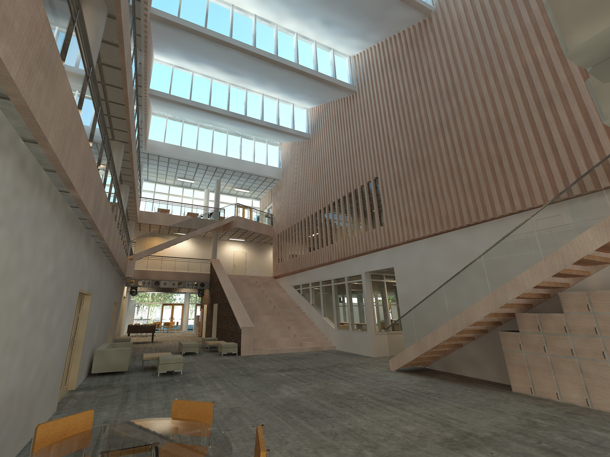
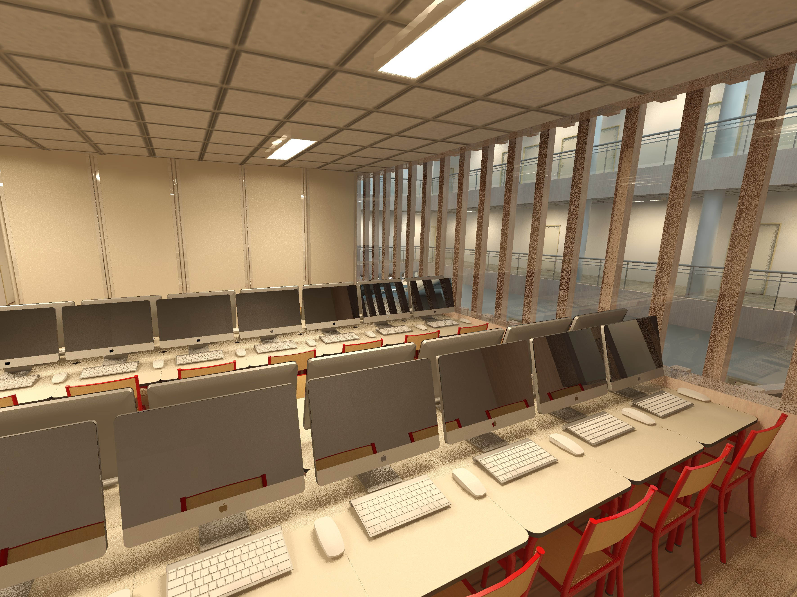
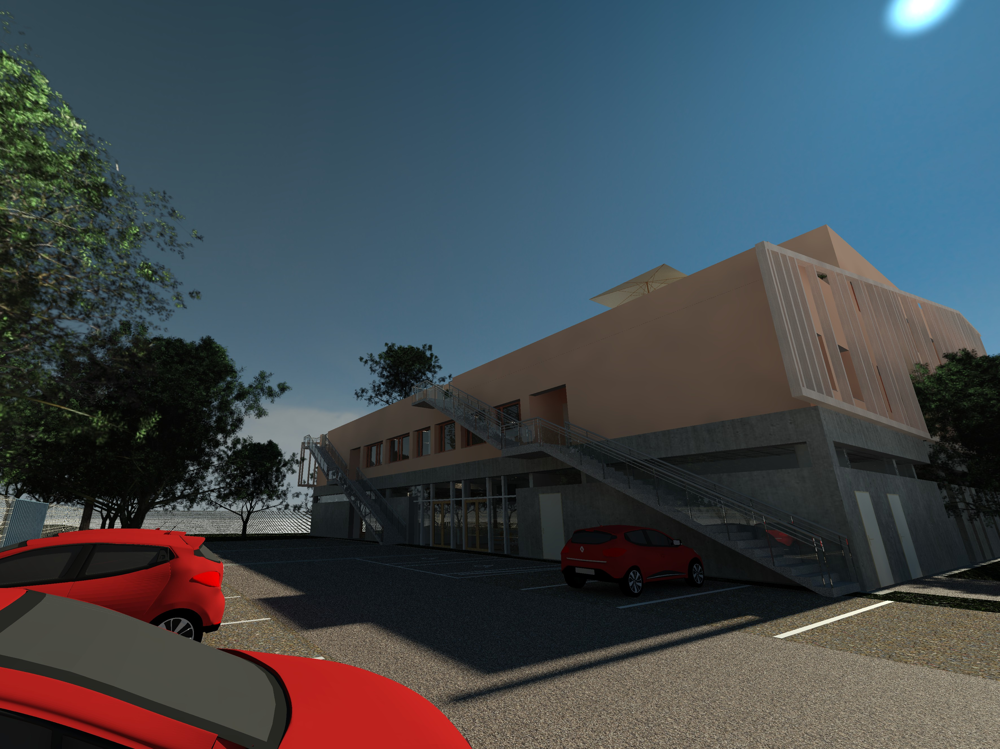

Maquette BIM du campus AURA
Modélisation des nouveaux locaux de mon école, menée en parallèle du projet réel et au contact direct de l'architecte et de la maîtrise d'ouvrage.

Le contexte Projet réel, maquette parallèle
BUILDERS construit de nouveaux locaux sur le campus AURA de Vaulx-en-Velin. J'ai modélisé le projet en amont du chantier réel, en repartant des pièces fournies par la maîtrise d'œuvre et en reprenant la maquette à chaque évolution.
Ce qui rend ce projet particulier, c'est la position : je n'étais pas dans un exercice scolaire fermé, mais en relation hebdomadaire avec l'architecte et la maîtrise d'ouvrage, avec de vraies décisions de conception qui tombaient entre deux versions.
Ce que j'ai produit
- Maquette numérique complète sous Revit. Structure, enveloppe, niveaux et circulations, tenue à jour au fil des évolutions du projet.
- Participation aux réunions hebdomadaires. Points avec l'architecte et la maîtrise d'ouvrage, prise en compte des arbitrages et retour des incohérences repérées dans le modèle.
- Vues et rendus de restitution. Coupes, perspectives et rendus Twinmotion pour rendre le projet lisible par des interlocuteurs non techniques.
Images quelques vues du projet



Vidéos un aperçu vidéo du projet
En raison des limitations du site, la qualité a été réduite pour assurer la compatibilité.
Bilan
C'est le projet qui a fixé mon orientation. Voir une maquette servir réellement à trancher des questions de conception, plutôt qu'à illustrer un rendu de fin de semestre, m'a convaincu que c'est ce métier que je veux faire.
Ce que j'en retiens
Une maquette n'a de valeur que si elle est à jour. La difficulté n'est pas de modéliser, elle est de tenir le modèle au rythme des décisions du projet.